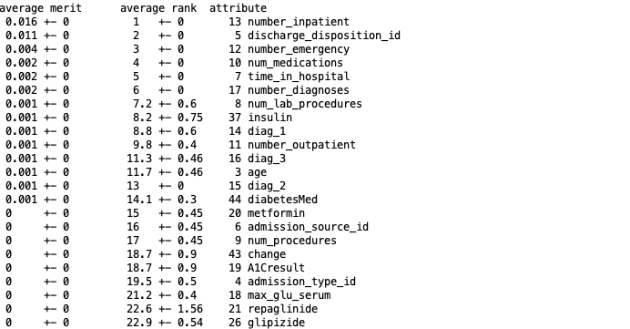

Diabetes accounts for 1 in 4 health care dollars in the U.S. with 30-day readmission being a huge strain to the system. If we are able to predict re-admission based on specific set of features then we may be able to tackle at-risk patients before relapse.
The first step was trying to understand the dataset and what it was showing which required research into the attributes, meanings and diabetes disease itself. There was 101,766 instances and 50 attributes. Considering I wanted to classify based on labelled attributes from the given set supervised learning would be best suited for this project.
To explore the data quickly I created histograms of each applicable feature which showed similar shape
accross some of the attributes.
This showed similar distribution of frequency for num_lab_procedures, num_medication and num_procedures.
This mean there is possibility these could be related if so it would make sense to remove when classifying
output variable during supervised learning.
On further inspection of these histograms it was found that there was an outlier for the
number of lab procedures for patients that only stayed for 1 day. This was an odd result as it was also
the mode. This may be because the majority of patients stayed 1 day for a check up which is more common
than overnight stays. It would be interesting to see how many of those 1 day check ups resulted in 30-day
readmission.
The relationship between num_lab_procedures, num_medication and num_procedures was further explored using
a scatter graph but seemed to be a a weak positive correlation. Overplotting made it hard to decipher true
relationship therefore relationship between two features were explored using linear regression.
Linear regression produced a result of 0.07 which was also very weak/poor. To improve this result the
dataset was checked for missing data, with outliers removed but results were similar. Therefore it was
concluded these features are not correlated and can be used for classifications.
Some of the attributes like the ICD9 diagnostic values needed to be binned into the actual names for clearer and easier analysis after missing values were inspected and it was decided to remove columns with over 50% missing and replace missing values with NaN to avoid distrupting data too much by removing completely. Then name inconsistencies, spaces and random characters were removed. Features with binominal options like True or False and Yes or No were imputed with 0 for False and 1 for True for better Machine Learning. Output variable was also changed to 1 for all re-admissions before 30 days and 0 for all patients that weren't re-admitted.
In order for better Machine Learning features needed to be reduced. Useless attributes can reduce performance of learning schemes and a study on Model Selection Management Systems advised the best process was to use a combination of manual selection, tools and domain knowledge. Due to time constraints and a large number of attributes InfoGainAttribute in WEKA was used in Weka to rank features based on contribution to entropy. The top performing features were kept using Python’s pandas dataframe to create a new subset from. 
Decision Tree and Naives Bayes showed nearly the same results with Decision Tree performing only slightly better with 88.8% accuracy compared to 88.2% correctly classified instances and 0.0002 lower root mean squared error. The results were based on the top 14 features selected in n 10 fold cross-fold. Naive Bayes performed a lot quicker at 0.03 seconds compared to 0.71 seconds it took Decision Tree to learn.
On first look the results seem to prove that the chosen attributes indeed did affected the outcome variable with high predictions meaning we are able to predict future patients at risk of re-admission by based on similar parameters. But the high false positive rate suggests the model has incorrectly predicted 30-day readmission for patients who haven't been readmitted. Therefore this model can not be relied on and further research needs to be done.